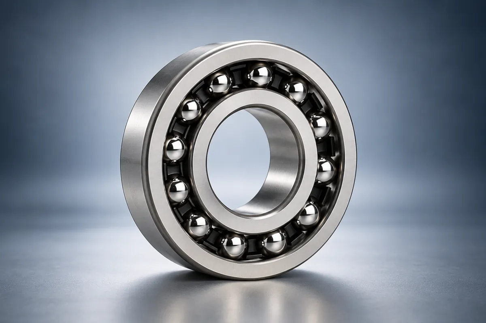

INDUSTRY APPLICATION
Bearings for Agriculture Machinery.
Agricultural machines work across changing loads, speeds and environments. Tractors, implements, harvesters and processing equipment may use bearings in wheels, shafts and rotating assemblies. Ball and taper roller bearing families are commonly used across some agricultural machinery applications, with selection depending on the design and operating position. Dust, moisture, shock loading and service conditions can influence the required arrangement. Share the machine make, model, bearing number and application so the component can be checked against the intended fit. Share the machine position and operating conditions to help confirm the suitable designation.
Ask about your application ↗
PRODUCT RANGE
Bearings for this industry
Product associations below are commonly used in these applications; they are not machine-specific recommendations. Confirm the exact specification with our team.

A SIMPLE PROCESS
How to order
Send your requirement
Share the bearing number, size or application.
We confirm
We check the exact specification with you.
We arrange supply
We confirm the next steps for your requirement.
COMMON QUESTIONS
Enquiries for Agriculture Machinery
Which bearing families are commonly used in Agriculture Machinery?
The page lists product families commonly considered for Agriculture Machinery. The required design depends on the equipment position and operating conditions.
What information should I send for a product enquiry?
Send the complete bearing number or dimensions, the machine application, required quantity and destination country.
Can Premach confirm the exact fit?
Share a drawing or existing part reference so the specification can be checked. Final fit must be confirmed for the specific equipment.
Need bearings for Agriculture Machinery?
Send us the machine and bearing details.
Continue on WhatsApp ↗